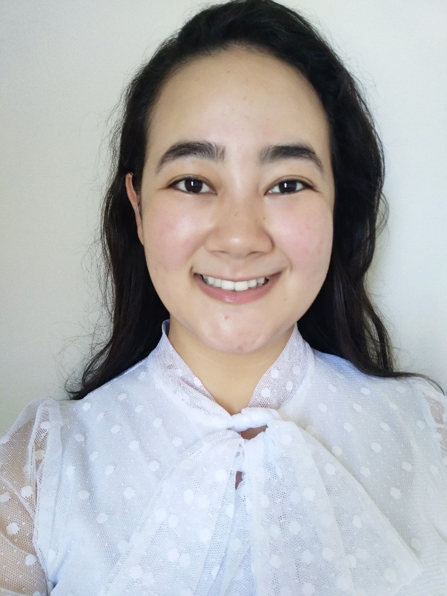

Karina
Hwang Arcolezi
Civil and Construction Engineering | Cementitious Materials | Experimental Research | Functional Building Materials
PhD in Construction Engineering · ÉTS Montréal

I have a background in civil and construction engineering, with research experience in cementitious materials, experimental testing, and functional building materials. I completed my doctoral research at École de technologie supérieure (ÉTS) in Montréal. My work has involved material fabrication, mechanical and optical testing, microstructural characterization, experimental design, and data analysis.
I am interested in applied research and development, particularly in construction materials, sustainable concrete, and materials that combine structural and functional performance. My experience spans Brazil, Canada, and Australia and includes research, teaching, technical communication, and multidisciplinary collaboration.
Cementitious materials
Design and characterization of mortar and concrete, including material formulation, mechanical performance, and microstructural behavior.
Sustainable and permeable concrete
Low-impact cementitious materials, pervious concrete, aggregate packing, and material strategies for more sustainable construction.
Functional building materials
Cementitious composites that integrate additional functions such as light transmission, sensing, interaction, and visual communication.
Experimental characterization
Development of testing methods and experimental setups for mechanical, optical, and material performance assessment.
Building performance
Material and physical aspects of the built environment, including construction systems, environmental performance, and building physics.
I studied Civil Engineering in Brazil, where I completed my B.Sc. at the State University of Mato Grosso (UNEMAT) and my M.Sc. at São Paulo State University (UNESP). During my master's, I worked on pervious concrete, with a focus on aggregate size, packing, and material performance. I later moved to Montréal to pursue doctoral research in Construction Engineering at École de technologie supérieure (ÉTS), where my work expanded toward functional cementitious materials, optical fibers, and experimental characterization. My research experience also includes a stay at the University of Sydney, where I worked on flood risk analysis using GIS and spatial data.
Alongside research, I have developed an interest in scientific photography and visual communication. Some of my scientific images and material experiments have also been presented through exhibitions and public science initiatives.
Acfas : La preuve par l'image
One of 20 works selected for exhibition at the Montréal Biodôme.
ÉTS Photo Contest Winner
Art and Culture category.
PBEEE Merit Scholarship
Merit scholarship awarded by the Fonds de recherche du Québec for international students.
NSERC Science Exposed
Jury Prize for scientific photography.